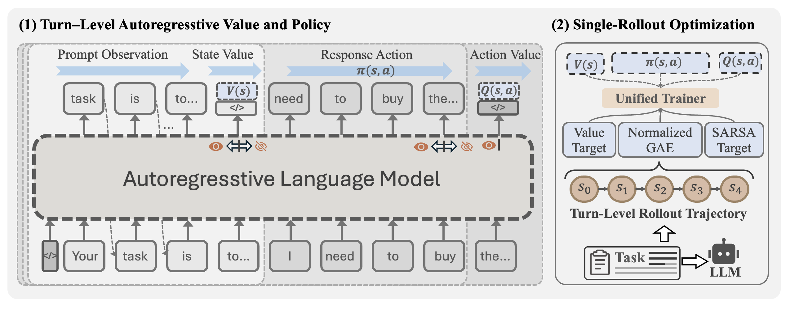
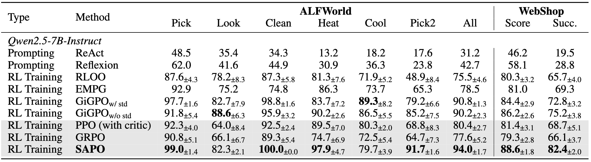
SAPO: Single-Rollout Autoregressive Policy Optimization for Agentic Reinforcement Learning
We show that, using only a single rollout without separate critic model, our Single-rollout Autoregressive Policy Optimization (SAPO) can stably learn advantage functions and policies, and gain substantial policy improvements. SAPO is a low-memory and compute-efficient training paradigm where the policy and value functions share a single autoregressive backbone. SAPO autoregressively generates policy and value predictions at distinct causal boundaries, then independently optimizing the PPO and SARSA objectives.
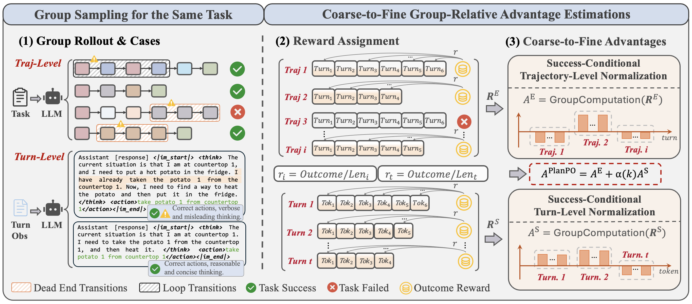
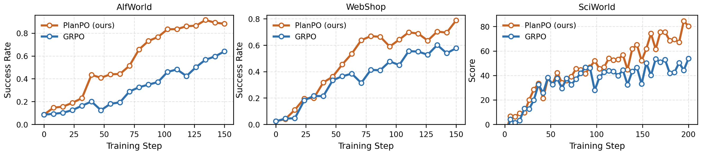
PlanPO: Group Planning-Aware Policy Optimization for Multi-Turn Agentic LLMs
We propose Group Planning-aware Policy Optimization (PlanPO), a simple and effective agentic RL method for learning generalizable planning abilities beyond task-specific high-quality behavior patterns. PlanPO introduces coarse-to-fine advantage signals, which capture the relative lengths differences in trajectory level and response level conditioned on successes sampled for the same task. Within the group-relative structure, this enables agents to actively learn generalizable and deliberate behaviors from high-quality rollouts.
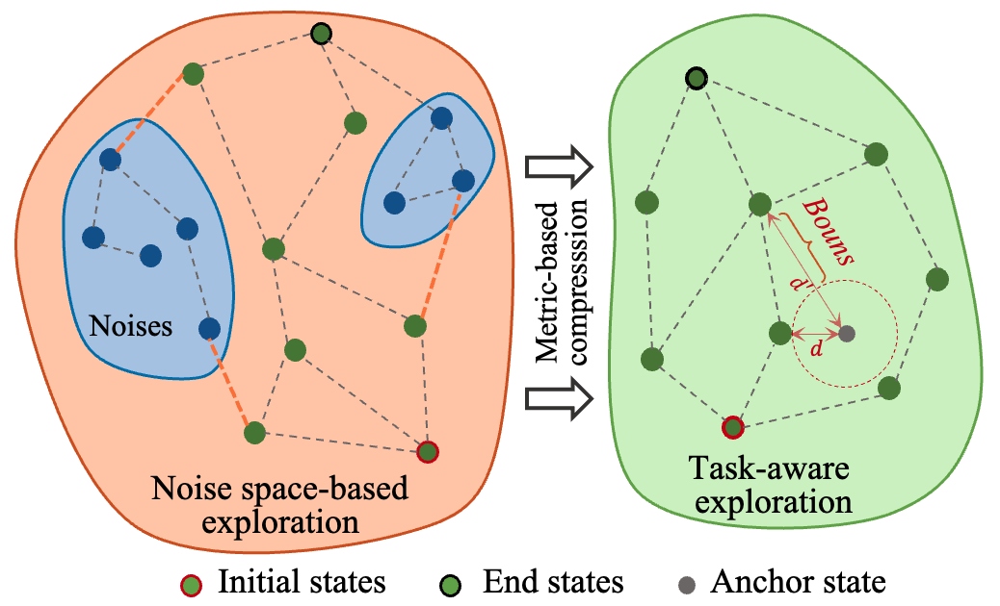
Task-Aware Exploration via a Predictive Bisimulation Metric
we present TEB, a Task-aware Exploration RL approach that tightly couples task-relevant representations with task-relevant intrinsic exploration through an identified predictive Bisimulation metric. Specifically, TEB leverages the metric not only to learn behaviorally grounded task representations but also to measure behaviorally intrinsic novelty over the learned latent space.
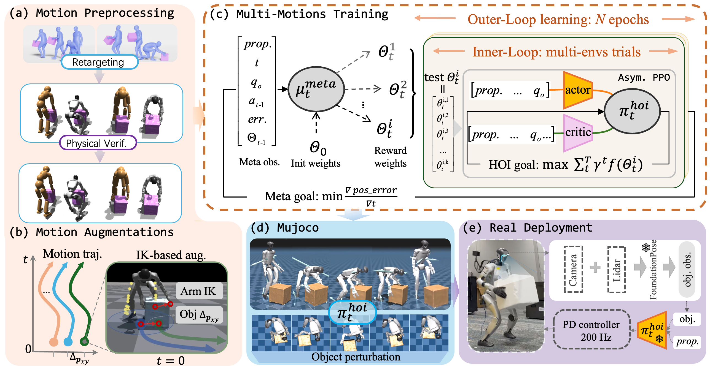
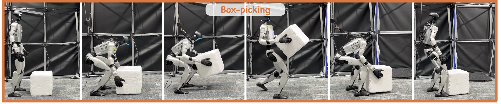
Interreal: A unified physics-based imitation framework for learning human-object interaction skills
In this work, we develop InterReal, a unified physics-based imitation learning framework for Real-world human-object Interaction (HOI) control. InterReal enables humanoid robots to track HOI reference motions, facilitating the learning of fine-grained interactive skills and their deployment in real-world settings. Within InterReal, we introduce a HOI motion data augmentation and a meta reward learner to address the challenge of interactive perturbations and large-scale reward shaping.
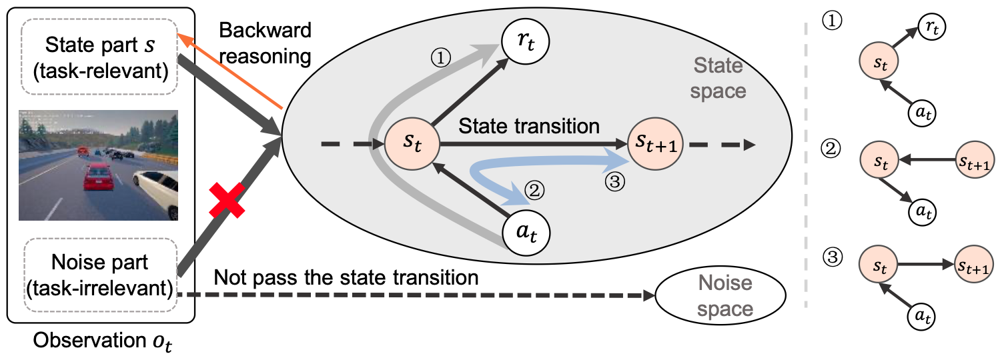
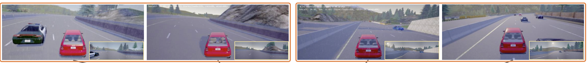
Learning Intrinsic Dynamic-Constraints Representations for Visual Reinforcement Learning
We propose Intrinsic Dynamics-constraints Representation learning (IDR) for visual RL. IDR leverages underlying MDP-based transition dynamics to constrain a shared encoder, enabling dynamic cross-validation representations and encouraging them to align with the state transition regularities while separating task-relevant states from noise.
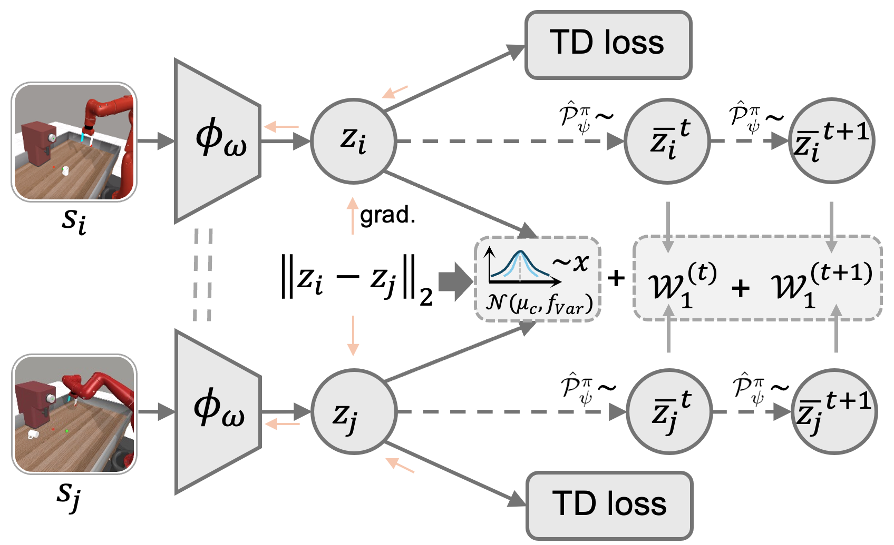
Learning representations via dynamics-based behavioral similarity for deep reinforcement learning
Recent studies demonstrate that behavioral similarity metrics leverage reward signals and transition dynamics to group behaviorally equivalent states, yet they are prone to representation collapse in sparse reward settings. We propose a dynamic behavioral metric for DRL, aiming to eliminate reward dependency while preserving behavioral discriminability.
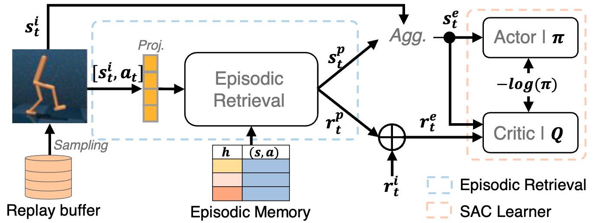
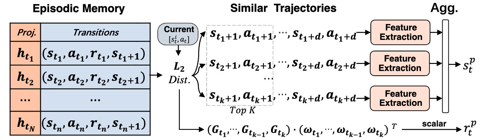
Episodic Reinforcement Learning with Expanded State-reward Space
To address the limitation of potential misalignment between the state and reward spaces in Episodic RL, we introduce an efficient Episodic RL algorithm with expanded state-reward space, where the expanded states used as the input and the expanded rewards used in the training both cover historical and current information at the same scale. This algorithm can not only improve the utilization efficiency of Episodic Memory, but also alleviate Q-value overestimation.
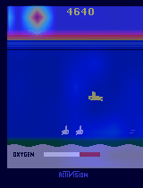
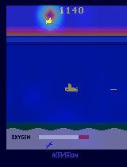
Gated Multi-Attention Representation in Reinforcement learning
We propose GMAQN, a gated multi-attention Deep Q-learning framework that filters task-irrelevant visual attention during early trial-and-error learning. By improving representation stability and directing agents toward decision-relevant regions, GMAQN addresses unreliable raw attention under sparse rewards and achieves higher scores and more accurate visual focus on challenging Atari 2600 games.